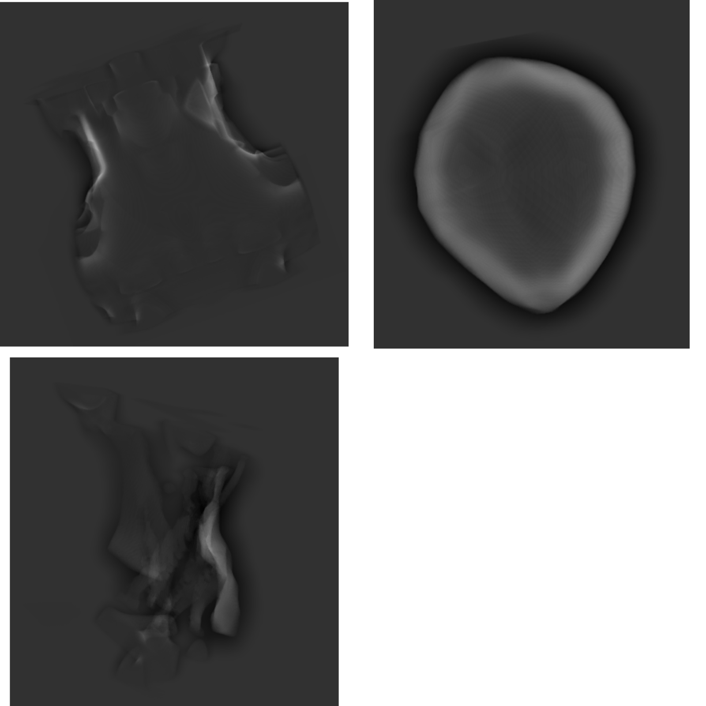
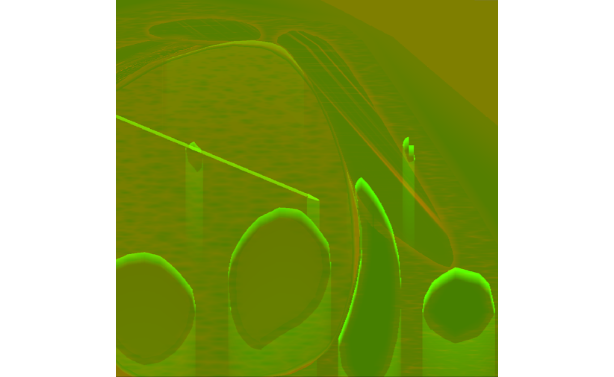
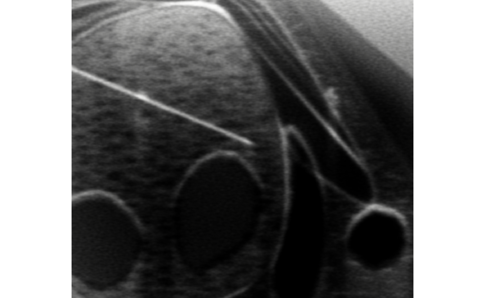
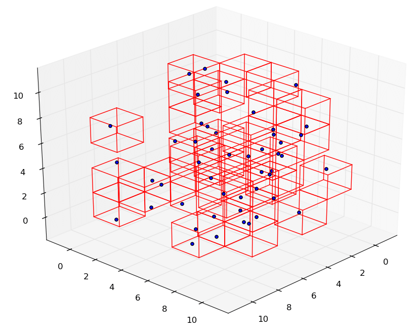

scroll to see more!
This simulator was developed alongside a team of Developers and Technical Artists using the Unity Game Engine. It was requested by a client who wanted to integrate Virtual Reality into the training of doctors to use their equipment.
Although there were several different aspects to the simulation, I was mainly tasked with working on the ultrasound simulation.
To achieve the ultrasound effect, first, the 3D models that make up the internal organs of the patient's body were baked into Signed Distance Fields (SDFs) and stored in a tree structure so that they could be passed to the Compute Shader.
The Compute Shader then uses this data to generate a flat slice of the 3D models based on where the ultrasound probe is located. The internal structures are then textured with customizable materials. Then, a quick ray-tracing step is done on the slice to calculate the shadows that the organs should cast. All of this data is then packed into the channels of a texture, resulting in something like this:
Finally, this texture goes through a post-processing step that combines all of the data calculated in the Compute Shader into a final image that gets presented to the user.
The project was successfully delivered and approved by the client and is now being used in production to train doctors in Virtual Reality.
scroll to see more!
I developed this simulator in the Unity Game Engine as one of my learning assignments as a Technical Art intern. It works by calculating the hydrodynamics of the particles in a Compute Shader and batch-rendering all of the particles in a single draw call to optimize for performance.
The first version of the fluid simulation was very unoptimized, and couldn't run in real-time with more than a couple of hundred particles, even though it was implemented in a Compute Shader. The first optimization strategy I employed was, as already mentioned, batching the draw calls for all particle spheres. This, however, did not result in significant performance gains.
Now that I was sure the bottleneck was the fluid calculation, I optimized it using a spatial hash grid. With this approach, the simulation space is divided into several chunks, and only particles in the same chunk and adjacent chunks interact with each other.
To achieve this, I had to first somehow sort the particles so that particles closer to each other in the simulation would also be close to each other in my particle array. I chose to do that based on a hash value calculated from their position. To sort the particles, I used the Bitonic Sort algorithm, which can easily be parallelized, making it ideal to be used in compute shaders.

Now, with these optimizations in place, the simulation can run in real time with hundreds of thousands of particles at once.
It was a very fun and challenging exercise, and I got to learn a lot more about Compute Shaders and optimizations in parallel systems.
scroll to see more!
I originally developed this effect to simulate blood on medical tools as they become dirty. The problem we faced at the time was that the target hardware for the project didn't support actual decals, so I had to fake them.
My approach ended up being so effective that from then on, we used my solution whenever we could.
The effect works by overlaying a second material on top of the original object, giving the impression of a decal over it.
The visual aspects of the blood were made by layering three different parts: a flat plane where everything below became red; a thin layer of noise right on top of the plane; and a texture the user can supply to have some more artistic control over the result.
All of these changes get applied to the normals as well, to give the impression that there's a layer of blood over the tool.
scroll to see more!
I had to develop this effect because none of the commercially available X-ray assets had features that suited the project's needs. It ended up being so useful that it is still used internally in several different medical simulations.
On the surface, it is just a simple fresnel effect over the mesh. However, the feature we needed that none of the other assets provided was the ability to focus on different slices of the mesh.
Using a combination of vertex positions and the camera's depth texture, I implemented a falloff effect on the X-ray. It can be configured to fall from back to front, from front to back, or both sides.
Several post-processing effects are also available to configure the effect for various X-ray types.
scroll to see more!
I developed this effect for a simulation where the player needed to make lines on a flat surface. Unfortunately, existing outline solutions didn't fit our needs, since none of them provided ways to make the outlines dashed, dotted, or full, which was a requirement for the project.
The outlines are made using Unity's Line Renderer. I chose to do it that way for a couple of reasons: they have perfect resolution, since they are drawn as vectors and I would be able to easily implement the dashed and dotted effects that I needed.
To draw the outline, I wrote an algorithm that, given a mesh, would find the vertices that were on the outer edge of the mesh. With those vertices, it was just a matter of using the Line Renderer between those vertices, and writing some shaders for the various effects that the outline needed.
Unfortunately, this approach only works with planar meshes. To support volumetric meshes, I had to employ a more usual outline algorithm.
While both approaches support the mesh masking feature, only the Line Renderer outline supports the different outline shapes (dotted and dashed).
scroll to see more!
This project is a collection of GLSL shaders to render 2D and 3D fractals using Ray Marching
The project consists of both the source code for the shaders, as well as mathematical explanations behind de creation and rendering of the geometric shapes.
The modular way in which the code has been written allows for easy modification to generate a wide range of different fractals.
Visualization of one of the most famous fractals, based on Mandelbrot's Set.

One of the many visualizations of Julia's Set, described by the French mathematician Gaston Julia.

Fractal created by me, using the 3D rendering shader, named after its resemblance to Menger's Sponge fractal.

Fractal created by me, using the 3D rendering shader, named after its resemblance to Menger's Sponge fractal.

These and many other fractals, along with their descriptions and histories, are available with the source code of the project.
scroll to see more!

This game was developed by a team of colleagues from my University's game development group, USP Game Dev, over the course of 72 hours, for the Ludum Dare 51 game jam.
It's a base-building, strategy, and survival game, based on a futuristic scenery.
Hundreds of years after exhausting the natural resources of their home planet, Sunset, humanity travels through the cosmos in the direction of what seems to be their last hope.
Planets orbiting the star PSR B1257+L13 emit a mysterious pulsating light that brightens the way for the last colonies to find refuge on these planets' rocky surfaces.
As they approach, the people of Sunset are amazed. The amount of energy emitted by these pulses might be just enough to sustain all their ships and colonies!
It's based on the construction of power plants to generate energy for several different buildings in the colony.


The source code and all of the assets are available in the GitLab repository, and builds for Windows, Linux, and Mac are available at the game's page on Ludum Dare 51's official site.
scroll to see more!
One of my favorite aspects of coding is creative coding, working together with computer graphics. Based on that, Daniel Shiffman, from The Coding Train YouTube channel, makes Coding Challenges that mix creative coding and computer graphics.
With the goal of having fun and learning more, I decided to recreate his Coding Challenges using other technologies that I'm more familiar with.
This is an ongoing project, and the goal is to, eventually, catch up to the over 200 challenges the original project has. I found it to be a great source of learning, both for me and for other people to see how to reach the same result from completely different platforms.


The source code for all projects is available in the GitLab repository.